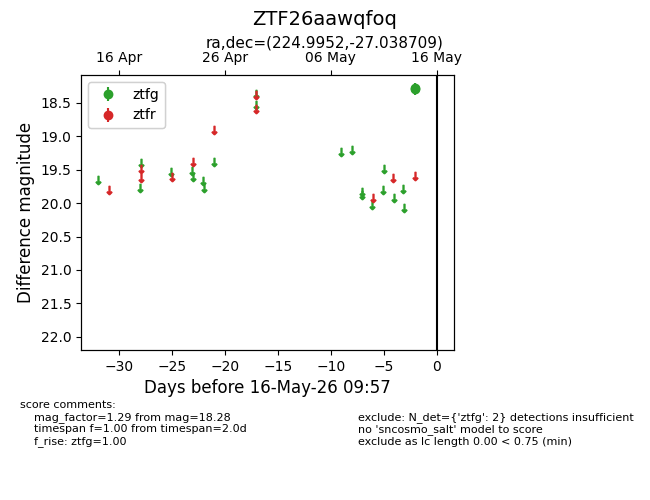
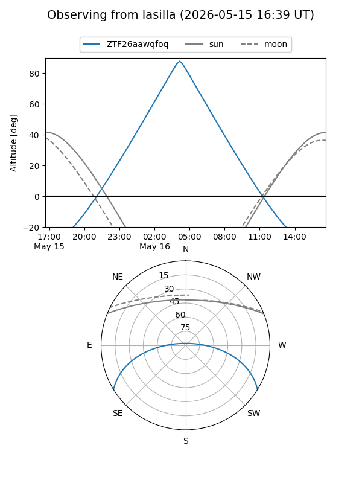
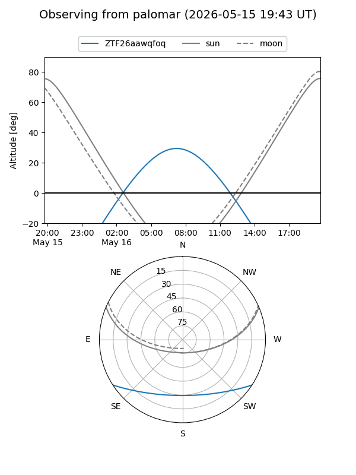

ZTF26aawqfoq
Target ZTF26aawqfoq at 2026-05-16 09:59
Aliases and brokers:
FINK: link
Lasair: link
ALeRCE: link
alt names
ZTF26aawqfoq (ztf,fink_ztf)
Coordinates:
equatorial (ra, dec) = 224.9952,-27.03871
equatorial (HMS+DMS) = 14:59:58.86,-27:02:19.35
galactic (l, b) = (335.2650,+27.64383)
Flags:
Photometry:
last ztfg=18.28
2 ztfg detections
Lightcurve

Visibility


Additional plots